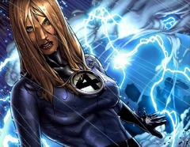

Женщина Невидимка (Invisible Woman) - один из членов-основателей Фантастической Четверки (Fantastic Four). Считается, что она самый сильный из участников команды. Она может создавать невидимые силовые поля любой формы, какой она только пожелает. Весь её потенциал еще не был показан.
Сью Сторм (Sue Strom) и её младший брат Джонни (Johnny) жили вполне нормальной жизнью, пока их мать не умерла в автомобильной катастрофе. Их отец, Франклин Сторм (Franklin Storm), который был известным и талантливым хирургом, не смог спасти жизнь своей жене. К сожалению, он не смог справиться с потерей. В результате он стал алкоголиком и игроком. Франклин оказался в драке, где убил ростовщика. За это его посадили в тюрьму. Сью пришла к нему, но он попросил больше не приходить, а Джонни сказать, что он умер. Франклин считал, что за свои поступки он не достоин своих детей. С этого момента Сью стала и матерью и сестрой для Джонни, заботясь о нем на протяжении детства, что привело к тому, что она повзрослела раньше многих своих сверстников. В конце концов, брат и сестра Стормы отправились к своей тете, которой принадлежал пансионат. Именно там Сью встретила мужчину, который изменил её жизнь. Она встретила и влюбилась в Рида Ричардса (Reed Richards), арендатора пансионата её тети. Ричардс был гением и блестящим ученым. На тот момент он учился в Колумбийском Университете (Columbian University) и в это же время впервые встретил 12-летнюю девочку, которая станет его товарищем по команде и женой.
Много лет прошло с тех пор, как их пути пересеклись еще раз. В попытке стать актрисой юная Сюзан (Susan) отправилась в Калифорнию, чтобы попытать счастья там и вновь встретилась с Ридом. Теперь уже Сюзан завлекла Рида, и вскоре они начали встречаться.
Примерно в это время Рид пытался претворить мечту всей своей жизни: построить космический корабль, который финансировал на свои деньги вместе с государственными деньгами. Устав ждать подходящего момента, правительство пригрозило прекратить финансирование проекта. В отчаянной попытке испытать корабль Рид взял своего лучшего друга и летчика-испытателя, Бена Гримма (Ben Grimm), Сью и Джонни на несанкционированный полет в открытый космос. К сожалению, корабль не имел адекватной защиты и он, вместе с экипажем на борту, попал под космическое излучение. Команда совершила аварийную посадку на Земле. Все четверо обнаружили, что космические лучи изменили их и дали им сверхчеловеческие способности. Команда решила использовать свои силы для борьбы со злом и стала называться Фантастической Четверкой. Их первым приключением в первом выпуске стала схватка против Человека-Крота (Mole Man) и его союзников-монстров.
Вскоре после первого сбора Фантастической Четверки забытый всеми Принц Атлантиды, Нэмор (Prince of Atlantis, Namor) вернул свои воспоминания после случайной встречи с Человеком-Факелом (Human Torch). Джонни признал в бездомном Нэмора и бросил его тело в воду, где последний вернул свои воспоминания и понял, кто он такой. Нэмор немедленно вернулся в Атлантиду и обнаружил, что она разрушена. Считая, что ответствененны за это обитатели поверхности, он отправился мстить. Нэмор остановился лишь тогда, когда увидел Сюзан и удивился, насколько она была прекрасна. То создало притяжение между ними, которое закончилось тем, что Сюзан пришлось сделать нелегкий выбор. Либо она остается с Ридом и выходит за него замуж, либо живет с Нэмором. Это сделало её очень растерянной, но в конце Сью выбрала выйти замуж за Рида и стать женой, а не Королевой. Хотя она и отвергла его, Нэмор продолжил питать к Сью нежные чувства до сих пор. С того момента Сюзан рассматривала Нэмора как близкого друга, хотя её по-прежнему влекло к нему. Свадьба Сью и Рида не обошлась без неприятностей: злодеи, нанятые Доктором Думом (Doctor Doom), воспользовались возможностью атаковать их.
Вскоре Сью обнаружила у себя новые способности: она могла превращать другие объекты (позади неё) в невидимые и проецировать и управлять могущественными силовыми полями. Хотя в атакующем плане она не могла соперничать с Существом (Thing), Сюзан могла защитить себя практически от любой угрозы.
Когда Супер-Скрулл (Super-Skrull), обладавший комбинированными способностями Фантастической Четверки, атаковал команду, Человек Факел смог заточить Скрулла в пещере, но тот сбежал и захватил Франклина Сторма. Четверка отыскала Супер-Скрулла, но оказалось, что он прикрепил к телу Франклина бомбу; их отец пожертвовал собой, чтобы спасти своих детей. Путешествие в родной мир Скруллов и смерть Полководца Моррата (Warlord Morrat), Скрулла, который санкционировал убийство Франклина, принесло немного мести.
Вскоре после свадьбы Сью забеременела Франклином и взяла декретный отпуск, покинув команду. Её место заняла Кристалл (Crystal), тогдашняя подружка Джонни и по совместительству одна из Нелюдей (Inhumans). Беременность Сью была трудной с самого начала. Из-за облучения космическими лучами тело Сюзан не могло правильно реагировать на присутствие плода, что ставило под угрозу жизнь как матери, так и ребенка.
Для того, чтобы спасти обоих Фантастическая Четверка отправилась в Негативную Зону (Negative Zone), чтобы заполучить Космический Управляющий Жезл Аннихилуса (Cosmic Control Rod of Annihilus). После долгой и напряженной битвы против правителя Негативной Зоны Четверка вернулась на Землю, где использовала Жезл для облегчения родов. Появившийся на свет сын Рида и Сью был назван в честь отца Сью, Франклина, который спас своим детям жизнь в два отчаянных момента в их супергеройской карьере. Полное имя ребенка – Франклин Бенджамин Ричардс (Franklin Benjamin Richards).
Франклин также проявил свои недюжинные способности в раннем возрасте (лично я считаю, что все дело в комбинации телекинеза Сью и невероятной мыслительной активности Рида – заметка Переводчика). Аннихилус вернулся и захватил ребенка, желая использовать его силы для своих целей. Риду пришлось сдерживать сверхчеловеческие способности Франклина, так как он боялся, что они приведут к массовым разрушениям. Рид «вырубил» разум Франклина, что напугало Сюзан. Почувствовав, что Рид не видит в ней равного себе, Сью забрала сына и уехала. Из-за этого «перерыва» в её деятельности в качестве участника команды, её место заняла Медуза (Medusa). Сью вскоре вернулась в команду благодаря помощи Нэмора. Правитель Атлантиды лишь хотел, чтобы Сью была счастлива из-за своей любви к ней. План сработал и Сюзан вернулась в команду и к Риду.
Сью и Рид отправились в негативную Зону на праздник, и там они зачали еще одного ребенка. Сью убедила Рида отправиться в Коннектикут, где они оба использовали вторую фамилию, Бенджамины (Benjamin`s). Вторая беременность Сью была еще тяжелее, чем первая. Вскоре было обнаружено, что клетки крови выделяют радиацию, что в значительной степени ослабляет мать и ребенка. Признав, что он знает недостаточно хорошо этот раздел науки, Рид обратился к светлейшим умам планеты, включая Морбиуса (Morbius) и Брюса Баннера (Bruce Banner). Когда никто не смог помочь Сью, Рид «проглотил» свою гордость и попросил о помощи Доктора Октопуса (Doctor Octopus) из-за его исключительных исследований в этой области. Увы, это не помогло, и Сью потеряла ребенка, в результате чего она подверглась большому эмоциональному напряжению.
Из-за потери Сью и её легко поддающихся эмоций, Психо-Человек (Psycho-Man) решил воспользоваться ситуацией. Он усилил негативные эмоции, что привело к превращению Сью в Злобу, Повелительницу Ненависти (Malice, The Mistress of Hate). Она обернулась против Фантастической Четверки и в одиночку чуть не победила её. Но Рид выдвинул теорию, что если он заставит Сью почувствовать реальную ненависть, она придет в себя. Введя план в действие, Рид смог использовать настоящие эмоции Сюзан для того, чтобы вернуть её к реальности, где она немедленно поняла, что кто-то управлял ей. Сью была свободна некоторое время, но это была её не последняя встреча с Психо-Человеком. Следует отметить, что после того, как Рид принуждал Сью к действию раз или два, он прибегал к физическому методу. Он даже ударил её сильно по лицу (отсылка к 281-ому выпуску). Несколько картинок с изображением этого события появлялись на различных сайтах, хотя обсуждали это немного людей. Оправдан ли был удар Рида или нет, каждый решает по-своему. Также стоит добавить, что похожий случай был в 222-ом выпуске, правда на меньшей панели и не выделялось на столько, как в предыдущем случае. Казалось бы, что хотя этот «удар» Рида был важен, именно его язвительный удар сломал контроль Психо-Человека над Сью.
Сью излила все свои тревоги и сомнения Риду и остальной команде, а также то, что никто не мог понять, что она чувствовала в тот момент. Затем группа решила отложить свои поиски Потустороннего (Beyonder), который недавно вернулся на Землю для того, чтобы помочь Сью справиться с ментальным напряжением.
После путешествия по микро-миру, откуда был родом Психо-Человек, команда попала в устроенную им ловушку. 283-й выпуск четверки назывался "Мучение" и правдиво описывает то, что сделал с Сюзан Психо-Человек. Он провел девушку через один кошмар за другим. Сначала он показал, как умер у неё на руках Джонни, а затем Бен умер в озере кислоты. После этого Рид начал бить её за то, что она промедлила и не спасла Бена и Джонни, а потом его самого проткнули гигантские шипы. Последнее, но не менее важное: Психо-Человек даже показал Сью её родителей в виде скелетов, которые разговаривали с ней. Наконец, когда Сюзан была на грани полного эмоцианольного срыва, Риду удалось выбраться из своей клетки через маленькую трещину и спасти свою жену. В следующем выпуске Сюзан совершает немыслимое: она использует устройство Психо-Человек на нем самом.
После последнего столкновения с Психо-Человеком Сью поняла, что ей надо повзрослеть и оставить в прошлом ту боль, поэтому она изменила своё прозвище и стала называться Невидимой Женщиной. В это же время она поняла весь потенциал своих сил. Теперь Сью могла создавать реальные объекты из силовых полей. С этого момента Сью стала только сильнее.
Сюзан оставила команду еще раз, чтобы заняться воспитанием Франклина. И она и Рид работали вместе с Мстителями (Avengers) некоторое время, спасая своего сына от демонического вторжения Инферно (Inferno).
Во время Бесконечной Войны (Infinity War) Магус (Magus), злое воплощение Адама Варлока (Adam Warlock), создал армию злых копий земных героев. Злая версия Рида взорвала в Здании Бакстера гамма-бомбу, чтобы атаковать собравшихся там супергероев Земли. Фантастическая Четверка присоединилась к героям в этой Бесконечно Войне, и Сью снова встретилась со Злобой, которая была послана из Измерения Проявлений (Dimension of Manifestations) и управлялась Магусом. Сью победила и поглотила Злобу, но эта личность постепенно забирала контроль над Сюзан. Она потеряла контроль над собой, когда вмешался Франклин. Он был послан в Иновременное измерение (Elsewhen dimension) отцом Рида, Натаниэлем (Nathaniel) и вернулся оттуда уже подростком, который называл себя Пси-Лорд (Psi-Lord). Он спас свою мать и вернулся в будущее.
Когда Рид был по-видимому убит в схватке с Доктором Думом, Человек-Муравей (Ant-Man) занял его место, назначив Сью новым ученым в команде. Сью наконец отыскала Рида во времени, оставленного там Гиперштормом (Hyperstorm). Сам Рид был поражен тем. Как Сью обрела в себе уверенность в качестве лидера команды и начал сомневаться в себе.
После того, как Профессор Икс (Professor X) уничтожил разум Магнето (Magneto) за то, что тот вытащил Адамантий (Adamantium) из костей Росомахи (Wolverine), чрезвычайно могущественное физическое проявление темной стороны Профессора Икс и сознания Магнето, назвавшая себя Натиском (Onslaught) напало на героев. Четверка и множество героев пожертвовали собой, чтобы победить его, но Франклин создал другую вселенную, названную Контр-Землей (Counter-Earth) и послал героев туда, чтобы спасти их. В этом новом мире Фантастическая Четверка начала жизнь заново, вместе с Мстителями.
ФЧ (FF) вернулась в их истинную вселенную и встретила Валерию фон Дум (Valeria Von Doom), которая заявила, что является дочкой Доктора Дума из будущего, где Сью была её матерью. Валерия была ключом к победе над Абраксасом (Abraxas), которого Рид затем изгнал, но неожиданное последствие его поражения привело к тому, что Валерия вернулась к тому моменту во времени, когда она находилась в теле Сью. Затем команда узнала, что Франклин послал свою сестру (второго ребенка, которого, как считали, Сью потеряла во время родов) в «другое место», чтобы спасти её от участи, которая ждала её при рождении. Сью снова страдала от чрезвычайно тяжелой беременности; её клетки выделяли излучение, которое сильно ослабляло её.
Что еще хуже, у Сью начались схватки в период безудержной истерии против Нелюдей, которые вернулись на Землю и пришли в Здание Бакстера (Baxter Building). В здание проникли и Сью была вынуждена защищать своих друзей, что также ухудшало её положение. В попытке спасти свою сестру Джонни отправился просить о помощи у единственного супер-гения, которого они знали, пока Рид находился в плену у Скрытых (Hidden Ones). После некоторых убеждения Доктор Дум согласился помочь, если ему разрешат назвать ребенка. Сью не хотела принимать его помощь, но в итоге согласилась, зная, что она и её дочь находятся в опасности. Используя магию и науку, Дум помог Сюзан родить и дал девочке имя Валерия, по имени его первой возлюбленной. Однако, в тайне от всех Дум произнес заклинание, в результате которого Валерия стала его магическим хранителем и после этого провел разрушительную атаку на членов команды. Во время столкновения Франклин был похищен демонами, а Валерия – Доктором Думом, что не могло сказаться на Сью. Кроме того, Дум схватил команду и, используя магию, вынудил их прожить болезненные версии способностей каждого из члена Четверки. Сью получила на время силы Джонни. В это время Рид с помощью Доктора Стрэнджа (Doctor Strange) спас команду и Валерию с Франклином, победив заодно и Дума.
Рид заявил, что в поможет жителям в Латверии (Latveria) стать более независимыми и раскрыть правду об их бывшем лидере. Он хотел покончить с угрозой оружия Дума. Люди в конечном итоге приняли команду, но Сью и остальным было не по себе от действий Рида. В это время Рид тайно планировал отправиться в измерение, где находился Дум, чтобы убедиться, что тот никогда не сможет оттуда сбежать. К сожалению, Думу удалось сделать это, используя Сью. В битве между Фантастической Четверкой и Думом, последний использовал Бена Гримма. Тому удалось сдерживать Дума достаточно долго для того, чтобы попросить Рида убить его. Ричардс исполнил просьбу своего друга. После этого Сью была настолько расстроена, что покинула Рида. Ричардс избежал уголовной ответственности, продав большинство своих патентов и изобретений. Он убедил Джонни и Сью отправиться на Небеса (Heaven), где находилась душа Бена и воскресить его. В качестве дара за все то, что они сделали, они были благословены встречей с Всевышним (One-Above-All)
Группа пришельцев прилетела на Землю, во главе с человеком по имени Зис (Zius). Они разработали устройство, позволяющее прятать планеты от Галактуса, тем самым спасая их от участи быть поглощенными Пожирателем Миров (World Devourer). В это же время они искали что-то или кого-то, кто мог вырубить их машину, что в итоге привело их на Землю, потому что Сью могла использовать свои силы, что видеть скрытые вещи. Зная, что она могла доказать их правоту и то, что Галактус уже знал об их плане, они решили убить Сью. В отчаянии Рид создал машину, с помощью которой Сью и Джонни обменялись силами. Зис подумал, что Сью лишилась своих сил, и спокойно покинул Землю. В свою очередь Галактус, который хотел сделать Сью своим новым вестником, почувствовал способности Сью внутри Джонни и сделал его вестником, усилив его новые способности, позволив ему видеть личности людей до самого «ядра».
Сью была вынуждена справляться со способностями своего брата и поняла, что контролировать их не так легко. Из-за этого она еще больше зауважала своего брата. В это время команда отчаянно пыталась вернуть Джонни обратно. С помощью Квазара (Quasar) они отправились туда ,где находился Галактус. Благодаря плану, составленному Ридом и Джонни, им удалось вернуть последнего, но не без последствий. Благодаря новым силам Джонни Галактус превратился в Галана (Galan), его первоначальную форму, и отправился на Землю обучаться путям людей. Вскоре после этого, когда Рид был готов вернуть Сью и Джонни их способности, устройство вышло из строя и вся команда была вынуждена играть на музыкальных стульях, гоняясь оп всему городу за своими способностями. В конечном итоге, все вернулось на свои места.
В сверхчеловеческой Гражданской Войне (Civil War) Рид поддержал Акт о Регистрации Супергероев (Superhuman Registration Act). Взгляды Сью отличались от мнения Рида, но она решила остаться с мужем. Однако вскоре на Джонни напала разъяренная толпа у ночного клуба, которая возмутилась тому, что благодаря супергеройскому статусу Джонни легко прошел в клуб (да и не делали люди различий между виновными и простыми героями; они были просто напуганы). Джонни впал в кому. Во время одной из самых долгих и значимых сражений Гражданской Войны, против Тайных Мстителей Капитана Америка (Captain America's Secret Avengers), Сью ,как и другие герои, стала свидетелем появления клона Тора (Thor), Рагнарека (Ragnarok). Он убил Билла Фостера (Bill Foster) и собирался разобраться с остальными членами сопротивления. Именно тогда Сюзан поняла, насколько смертельно опасной и развращенной была сторона, поддерживающая Регистрацию. Желая спасти своих друзей, Сью встала между Рагнареком и героями и создала защитное поле, помешав клону убить их всех. После этого Сюзан приказала Мстителям уходить. Рид отчаянно пытался объяснить, что он не имел ничего общего с Рагнареком, но Сью сказала ему, что не о чем тут говорить и ушла.  Вскоре после этого Джонни выписали из больницы, и он вместе со Сюзан присоединился к Тайным Мстителям. Прежде чем оставить Рида, она оставила записку, где объясняла причину своего решения и попросила Рида провести ночь с детьми, про которых он забыл с самого начала конфликта.
К концу Гражданской Войны в решающей битве Сью решила защищать невинных граждан, пока другие герои сражались. Таскмастер (Taskmaster), один из преступников, нанятый сторонниками Акта для прекращения конфликта, заметил её и был готов выстрелить, но её прикрыл Рид. В ярости и отвращении Сью создала силовое поле и впечатала Таскмастера в землю. Позже Сью приняла амнистию и помогала восстанавливать улицы Нью-Йорка. Получив письмо от Рида, она вернулась к нему.
В это время они решили восстановить свои пошатнувшиеся отношения. Они взяли отпуск от Фантастической Четверки. Их место заняли Гроза (Storm) и Черная Пантера (Black Panther).
Рид отправился вместе со Сью на Титан (Titan), одну из лун Стаурна. Это был их медовый месяц, так как с их свадьбы они так и не могли его организовать. Оказавшись там, Рид обнаружил неизвестный объект и для его подробного изучения вынужден был отправиться обратно на Землю. Сью осталась одна на корабле и поверглась нападению Ужасной Четверки (Frightful Four). Она сдерживала их столько, сколько смогла, пока Чародей (Wizard) не использовал свою новую пушку, которая стреляла на частоте, позволявшей пробить силовое поле Сью. Как только он использовал его, Сью была побеждена. Затем Чародей связался с Ридом и заявил, что готов убить его жену. Прежде чем Рид смог это сделать, его корабль, по-видимому, взорвался. Затем Чародей поместил на Сью ингибитор способностей и держал её в качестве узника на корабле. Все это было сделано для того, чтобы показать верховенство гения Чародея над гением Рида. Сью отказалась принимать это, за что Чародей её жестоко избил. Рид, вместе с Джонни, Беном, Грозой и Черной Пантерой отправились на корабль Чародея, чтобы спасти Сью. Наконец, Сюзан была спасена Грозой, которая отключила ингибиторное устройство. В отместку за все, что с ней сделали Сью угрожала Чародею, создав силовой пузырь вокруг его сердца. Напуганный «такой» Сью, он упал в обморок, а сама Ужасающая Четверка отправилась восвояси.
На пути в Канаду Сью попала в засаду, устроенную Скруллом, который принял облик Рида; затем её забрали на их корабль. Лийа Лазэрфист (Lyja Lazerfist) приняла облик Сью и проникла в Здание Бакстера, открыв портал, который отправил три верхних этажа здания в Негативную Зону и запер там её вместе с Джонни, Беном, Франклином и Валерией. Тем временем Скруллы продолжали заменять супергероев Земли, маскируясь под них. Ближе к концу этого Вторжения Железный Человек (Iron Man) отправился в космос, чтобы уничтожить находившийся там корабль Скруллов, но вместо этого обнаружил там всех похищенных героев; Сью находилась среди них. Достигнув поверхности, она воссоединилась с Ридом, и вместе они отправились в Здание Бакстера, чтобы убедиться, что их семья в порядке.
Бывшая любовь Рида, Алисса Кастл (Alyssa Castle) (в девичестве Мой/Moy) снова вернулась в его жизнь и раскрыла ему секрет «Нового Мира» (Nu World), построенного ей и её мужем Тэдом (Ted), чтобы разместить население Земли, когда наша Земля станет непригодной для жизни. Робот известный как К.Э.П. (C.A.P.), созданный для защиты нового мира, сбежал и телепортировался на Землю для уничтожения всех угроз, а именно – супергероев. Герои объединились и попытались повергнуть машину, но им это не удалось. Рид, в конце концов, удалось остановить робота, используя созданного им Анти-Галактуса (Anti-Galactus). Алисса рассказала Риду, что все еще любит его, но он ответил, что любит только Сью.
Сью и Рид отправились назад во времени, чтобы отпраздновать годовщину их свадьбы в ресторане рядом с тем местом, где они впервые встретились, когда уже повзрослели. Рид подарил Сюзан кольцо с галактикой внутри; 74 обитаемых мира и сорок триллионов пар, которые любят друг друга так же, как и они. Сью же подарила ему диск с альбомом Боба Дилана. Она прокомментировала то, что Рид так легко отказал Алиссе. Также она добавила, что знала его ответ с самого начала. В этот момент они видят прошлые версии самих себя и то, как они натолкнулись друг на друга.
Затем Сью искала няню для Франклина и Валерии и нашла одну – Миссис Табиту Денев (Missis Tabitha Deneuve). Доктор Дум появился в Здании Бакстера, в поисках помощи, но вместо этого был похищен новой группой сверхсильных индивидов. Это оставило всех в замешательстве. Вскоре после этого Алисса связалась со Сюзан и просила помощи в разоблачении её мужа и его проекта Нового Мира. Оказалось, что его истинным назначением этого проекта являлось убежище для самых богатых. Алисса пошутила вместе со Сью, что она, возможно, не самый любимый человек для Рида и что она чувствовала себя глупо из-за того, что раскрыла это Риду. Затем похитили Джонни, что не на шутку встревожило Сью. Вскоре после этого Здание Бакстера было атаковано изнутри. В попытке защитить Валерию и Табиту (не зная, что это именно она организовала атаку) Сью сказала Табите спрятаться за ней. В ответ Табита сказала Сью отпустить Валерию. Сью поняла, что Табита причастна к этой атаке, но её уже поразило силовое поле в виде луча. Табита собралась уходить, но за ней побежала Валерия, которая сказала: «Нет, мам, остановись!», что указывает на то, что Табита – это Сью Ричардс из будущего.
На самом деле, команда сверхлюдей ,которые похитили Дума и Джонни – Новые Защитники (New Defenders); они отправились в наше время из разрушенной Земли спустя 500 лет. Они планировали создать устройство, названное Творением Галактуса (Galactus Engine) для того, чтобы собрать миллиарды беженцев из своего времени и спасти их. Табита возглавила их команду. Рид разработал гениальный план, как отыскать Защитников. Он предположил, что если Табита – это будущая версия их Сью, он ввел Сью маячок, который и вывел их на убежище команды. Галактус, Дум и Джонни питали Творение Галактуса, но вместо транспортировки миллиардов из будущего в прошлое они были отправлены на Новый Мир (благодаря своевременному вмешательству Алиссы и Сью). Табита решила извиниться перед Думом, однако, когда она его освободила, он убил её. Чтобы проводить её с честью, Сюзан и остальная часть Четверки провела похороны.
Рид создал устройство, названное Мост (The Bridge) для исследования альтернативных реальностей. Тем временем Сью, Джонни и Бен сражались с агентами М.О.Л.О.Т.а. (H.A.M.M.E.R.). Машина Рида послала троицу в реальность, где Гражданская Война супергероев произошла в Хайборийскую Эру (Hyborian Age). Рид продолжил изучать параллельные миры, где Гражданская Война закончилась по-другому для того, чтобы отыскать причину того, что его реальность стала именно такой, какой она была сейчас. Тем временем Сью, Джонни и Бен путешествовали через свернутое пространство и время. Когда Рид вырубил Мост, и все вернулись домой, Сью попросила его уничтожить машину. Рид сделал это, но втайне от всех включил её снова и связался с существами из альтернативной вселенной, которые поведали ему, как привести все в порядок.
После того, как Франклин из будущего прибыл на день рождения нынешнего Франклина и предупредил Фантастическую Четверку о приближающейся Войне Четырех Городов (War of Four Cities), команда отыскала четыре потерянных цивилизации. Одной из них было потерянное царство Старой Атлантиды (Old Atlantis) в озере Восток (lake Vostok) под Антарктикой. Жители этого города выбрали Сюзан в качестве посла, но когда она вернулась туда с Нэмором, чтобы вести с ними переговоры, все пошло не так и Нэмор убил их правителя, Ул-Ухара (King Ul-Uhar). Таким образом, Сюзан стала защитницей Вии и Ву (Vii and Wu), наследников трона Ухари (Uhari) в Пике (Peak), и регентом престола. Сью вернулась в Здание Бакстера, поэтому Ухари дали ей устройство связи. В это же время Джонни бился в последний раз в Негативной Зоне.
После смерти Джонни, остальные участники команды переименовали себя в Фонд Будущего (Future Foundation), вместе с Человеком-Пауком (Spider-Man), который занял место Человека Факела. Сью объяснила ему смену цвета костюма: прежний костюм ассоциировался с Джонни, а нынешняя расцветка отражала нынешнюю ситуацию в мире. После того, как Рид из альтернативной вселенной прибыл на Землю-616 (Earth-616)через Мост и уничтожил Пик, Сюзан вернулась в Здание Бакстера, пока остальная команда сражалась с другим Ридом в городе Высшего Эволюционера (High Evolutionary).Вернувшись из схватки, Рид объединил силы Фонда, Мстителей, Новых Мстителей (New Avengers) для атаки на Аттилан (Attilan), который тоже участвовал в этой войне. В это время армия Крии (Kree) атаковала Нью-Йорк. Используя свои способности, сфокусированные с помощью брони Железного Человека, Сью создала силовое поле над Манхэттеном, но потеряла сознание, когда «щит» был сломан. Тем временем Культ Негативной Зоны (Cult of Negative Zone) ворвался в Здание Бакстера и открыл портал в Негативную Зону, несмотря на усилия Человека-Паука. В портале мы видим живого Джонни Сторма с поверженным Аннихилусом.
Затем Джонни собрал команду, создав из пламени символ «4» над Зданием Бакстера. Сью, Рид, Бен и Питер (Peter) поднялись на борт одного из кораблей Волны Аннигиляции (Annihilation Wave), управляемого Джонни, который использовал остальную часть кораблей для борьбы с армией Крии, пока Вселенские Нелюди (Universal Inhumans) не попросили его позволить закончить им самим. Тем временем, остальные герои устраняли проблемы меньшего масштаба – уничтожали падающие обломки кораблей. Рид и Сью вызвали Галактуса, который окончательно уничтожил армию Крии. В этот момент появились Безумные Целестиалы (Mad Celestials), которые хотели уничтожить вселенную. Хотя команда и пыталась использовать Центр/Hub (оружие массового уничтожения, разработанное Ридами), они не смогли победить Целестиалов. Затем появились Франклин и Валерия из будущего.
Сью Сторм была создана Джеком Кирби (Jack Kirby) и Стэном Ли (Sten Lee). Впервые она появилась в первом номере Фантастической Четверки, в ноябре 1961-ого. Ли и Кирби создали Фантастическую Четверку после того, как увидели успех комикса издательства DC Лига Справедливости Америки (Justice League of America). Также ходили слухи, что Стэн Ли черпал вдохновение при создании Четверки из Морских Дьяволов (Sea Devils) DC. Если это правда, тогда Сью Сторм явялется копией прекрасной Джуди Уэлтон (Judy Walton) изи Морских Дьяволов.
Женщина Невидимка получила свои способности после облучения космическими лучами. Мистер Фантастик предположил, что Сью Сторм каким-то образом проникает в гиперпространство, когда использует свои способности. Единственным ограничением на данный момент является нежелание использовать свои силы кроме случаев крайней необходимости.
Невидимость: Женщина Невидимка обладает ментальной способностью манипулировать космической энергией для различных эффектов, включая «сокрытие» самой себя и других объектов, и создание плотных невидимых силовых полей. Пока еще неизвестно как, но космическая энергия взаимодействует с клетками её тела так, чтобы производить новый вид энергии с необычными свойствами. Простым усилием воли Сью может заставить все длины волн видимого, инфракрасного и ультрафиолетового света огибать её без искажений; кроме того, она также может направлять достаточно неискаженного света в свои глаза для сохранения полного спектра видимости, пока Сью находится в состоянии невидимости. Наблюдатель, неподозревающий о своеобразном пути света вокруг тела Сью, будет видеть сквозь неё. Женщина Невидимка также может ментально проектировать невидимую энергию, производимую в клетках её тела, чтобы сделать других людей или объекты невидимыми. Наибольший объем, который она может покрыть невидимым силовым полем – примерно 40000 кубических футов (1133 кубических метров), что эквивалентно небольшому бассейну. Плюс ко всему Сюзан может делать невидимыми части своего тела. Сюзан может создавать и обратный эффект: делать объекты видимыми через вмешательство с помощью энергии, вырабатываемой клетками её тела. Более того, она может «делать» энергию, которая не является частью видимого спектра, видимой аналогичным взаимодействием. Также Сью может ощущать, когда невидимость обеспечивается физическими средствами (за исключением магии или псионики).
Псионические Силовые Поля: В то время как клетки тела Женщины Невидимки производят определенное количество энергии, клетки её мозга производят совершенно другой, более сложный вид энергии. Через концентрацию Сью способна проецировать поле псионической природы, которым она может управлять и превращать в ряд простых форм: прямоугольных плоскостей, цилиндров, шаров, куполов, конусов и т.п. Сложность формы ограничена способностью представлять (мысленно визуализировать) определенную форму и держать её в строгом ментальном «фокусе»: даже она не может видеть формы, которые она создает. Размер данной проекции также ограничен её возможностью представлять. Мельчайшая форма, которую Сью может визуализировать, по размеру составляет пузырек. Наибольшая форма достигает 100 футов в диаметре. Еще Сью может проецировать большие объекты, которые сами по себе являются полыми. Например, купол 1 фут толщиной и около мили в диаметре(5,280 футов)и купол 1 дюйм толщиной и около 3,2 миль в диаметре. Маленькие объекты могу тстать ракетами при хорошем ускорении. Плюс к этому Сью может «увеличивать размеры силовых полей, формируя из них «колья» высотой до 30 метров (100 футов). на данный момент самым впечатляющим проявлением её силы является момент, когда она разрушила пластину брони Целестиала.
Женщина Невидимка способна использовать проекции для различных целей:
Полет: Женщина невидимка может летать, используя силовые поля. Максимальная продемонстрированная скорость – 25 миль в час (40 км в час). Однако вечно летать на такой скорость она не может. Предел 4 часа, прежде чем Сью начнет уставать.
Так как её сила – это продолжение её разума и тела, Женщина Невидимка зависит от инерциальных сил, действующих на её проекции. Таким образом, машина на скорости в 96 км в час врезается в стену, построенную из силового поля, 6 дюймов в толщину, может пострадать и сама Сью, как будто это её сбила машина. Она может в некоторой степени контролировать поверхностную жесткость поля – она может быть подобна стали толщиной в 2,5 фута, а может быть мягкой, что позволяет поглощать энергию от удара. На данный момент её способности достигли уровня, когда Сью может поднять объекты массой более 100 тонн. Она смогла защитить ФЧ, Дума и Аннихилуса при прохождении через черную дыру (хотя здесь не обошлось без помощи Космического Управляющего Жезла). Недавно Сью смогла даже разрушить пластину брони Целестиала.
Ударные волны: Сью может использовать силовые поля в качестве оружия ударной силы.
Она способна генерировать и управлять несколькими полями одновременно.
Сью обладает скромным опытом и способностями в области обучения. Она хороший рукопашный боец. Она славится изменением своей прически (что возможно связано с изменением костюма).
Сюзан Сторм обладает уровнем силы, характерным для женщины, которая занимается умеренными упражнениями на регулярной основе.
Размер, число и движения созданных ею объектов ограничены лишь концентрацией.
Фантастический костюм: Костюм Сью состоит из нестабильных молекул (unstable molecules), так что они становятся невидимыми вместе с ней. Ткань в костюме представляет собой электронную сеть микропередатчиков и сенсоров, которые отслеживают её местоположение, состояние и другие данные. Сеть передает информацию другим членам команды. Клавиатура и экран на перчатке позволяет Сью Сторм просматривать информацию и видеть все то, что видят и остальные.
Сигнальный огонь Фантастической Четверки: Выполняет 2 функции – сигнальный огонь в виде символа «4» и зажигательное оружие.
Фантастическая Машина – 2, Квинджет Мстителей, Тарелка Ксантов, Фантастический Вертолет, Фантастическая Машина – 1, экспериментальный звездный корабль и многое другое.
Наверх